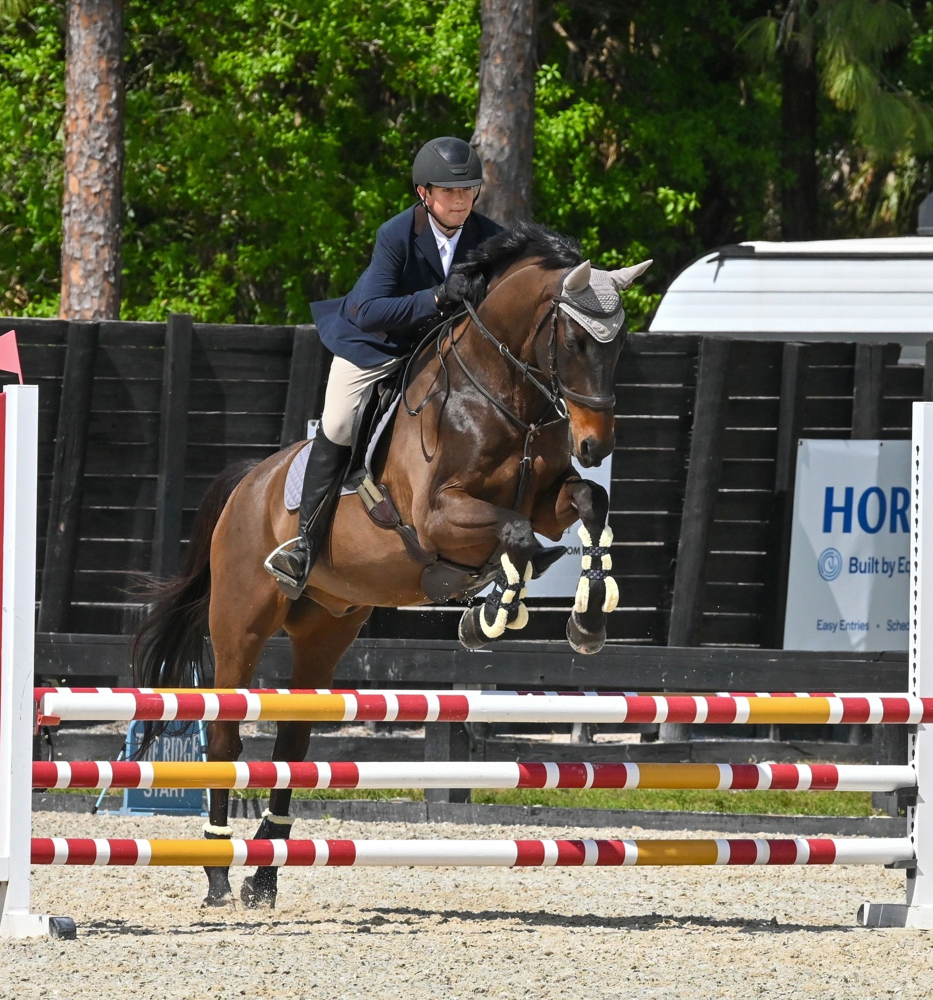

In the ring
Performance
Show-ring moments that reflect the care and attention behind the work.
Our Horses
A visual introduction to the horses in the program, the rider partnerships and the work that happens in and out of the show ring.
The Long Stride horses
Individual horses. Enduring partnerships.Our Horses celebrates the program; it is intentionally separate from the current sales offering.
In the program
A collection of moments from the horses and riders at Long Stride Ranch.

Show-ring moments that reflect the care and attention behind the work.

The relationship between horse and rider stays at the center of the program.

Quiet moments and individual personalities beyond the show ring.
Horse Sales
Current sales offerings live separately, so buyers can focus on verified availability and details.